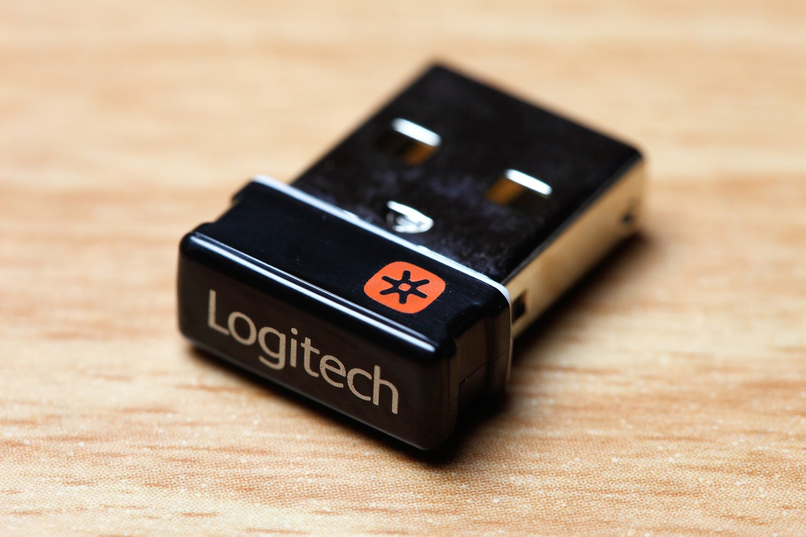

The Autopsy Report · Device #100
The Logitech Unifying Receiver
The little orange-starred dongle that pairs six devices to one USB port — and the reason an entire industry learned to ship firmware updates. We haven't opened one; the public record carries this one.
What is this thing?
The Logitech Unifying receiver (model C-U0007) is a tiny USB dongle that wirelessly connects up to six compatible Logitech mice and keyboards over a proprietary 2.4 GHz protocol — one port, a whole desk. It has shipped since 2009 — Logitech's August 4, 2009 press release introduced it as the tiny receiver that could pair multiple keyboards and mice to one USB port — and remains one of the most common wireless receivers ever made; community hardware records associate it with USB ID 046d:c52b. Logitech press release (via SlashGear) MouseJack issue tracker (community)
In 2016 it became famous for the wrong reason: security researchers demonstrated the MouseJack attacks against 2.4 GHz wireless dongles, and Logitech answered with firmware updates — the defensive moral of this report. Dark Reading Redmond Pie
Not yet on our bench
We don't own a Unifying receiver, so nothing here comes from our hands: no disassembly, no board photos, no measurements, no radio captures. Everything below is built from public records — the FCC filing reference, security press coverage, and community hardware records. When a unit lands on our bench, we'll verify the hardware firsthand and update this page.
A short history
- 2009Logitech introduces Unifying on August 4, 2009: one tiny receiver for up to six devices, on a proprietary 2.4 GHz protocol rather than Bluetooth, debuting with the K350/K340 keyboards and M705/M505 mice. Logitech press release (via SlashGear)
- February 2016Bastille Research discloses MouseJack — vulnerabilities in 2.4 GHz wireless mice and keyboards from multiple vendors, Logitech included. Dark Reading
- 2016–presentLogitech ships firmware updates for affected receivers; the practical defense remains what it was then: keep the dongle's firmware current. Redmond Pie
The outside
A fingernail-sized black USB-A nub with the orange Unifying star — designed to live in a laptop port forever and be forgotten. The regulatory label information ships in the manual rather than on the tiny housing. MouseJack issue tracker (community)

The board
No public source in our set identifies the receiver's radio IC at component level, and we have no unit of our own — so the chip table below stays honestly empty. We specifically do not infer the radio from generic MouseJack presentation slides; those cover many vendors' dongles, and guessing would be fabrication. The FCC filing reference is FCC ID JNZCU0007, grantee Logitech Far East Ltd.
Under the microscope: the chips
What's on the board, what each part does, and how sure we are. Confirmed means a primary source (FCC exhibit or manufacturer document). Likely means well-corroborated public records.
| Chip | What it does | How we know | Dig deeper |
|---|---|---|---|
| No exact integrated-circuit identity for the C-U0007 receiver is publicly documented. Hardware summaries place the design in Nordic's nRF24L family of 2.4 GHz radios, but the precise part number is not verified — and we do not infer it from MouseJack materials covering other vendors' hardware. The exact IC waits for the bench. | |||
The government's file on this dongle
The receiver's certification reference is FCC ID JNZCU0007, grantee Logitech Far East Ltd., model C-U0007. Our research notes a manual-label allowance in the filing — unsurprising for a device too small to carry a printed label. We could not verify grant dates or exhibit details from the records we reviewed, so we don't state them.
Debug and service modes
Nothing about a debug interface or service mode for this hardware is documented in the public records we reviewed, and we claim nothing. Our posture throughout: we listen, we don't knock. The security history below is the useful part of this device's story, and we tell it defensively.
What public records show
- The MouseJack lesson, defensively: in 2016, researchers showed that many 2.4 GHz wireless dongles — Logitech's among them — had protocol weaknesses an attacker in radio range could abuse. Logitech's answer was firmware updates for the receivers. The takeaway for owners is simple and still current: run the manufacturer's firmware updater and keep the dongle patched. We publish no attack procedure — the fix is the story. Dark Reading Redmond Pie
- A proprietary 2.4 GHz protocol is not Bluetooth — it got none of Bluetooth's pairing and encryption scrutiny by default, which is exactly the gap MouseJack walked through. Dark Reading
- The community-maintained hardware record ties model C-U0007 to USB ID 046d:c52b — useful for identifying the dongle on your own machine, read-only. MouseJack issue tracker (community)
What we haven't done
- No disassembly — we don't own a unit.
- No radio-IC identification; the chip table above is intentionally empty.
- No radio captures, no protocol analysis, no attack replication of any kind.
- No firmware extraction or update testing.
By the numbers
- Model: C-U0007 (Unifying receiver) · FCC ID: JNZCU0007 · Grantee: Logitech Far East Ltd.
- USB ID: 046d:c52b (community hardware record)
- Protocol: proprietary 2.4 GHz (not Bluetooth) · Pairs: up to 6 devices
- Shipping since: 2009 (announced August 4, 2009) · MouseJack disclosed: February 2016
Words to know
Every term this page uses, in plain English. No prior knowledge required.
- Unifying
- Logitech's system for pairing up to six wireless mice/keyboards to one tiny USB receiver.
- 2.4 GHz proprietary protocol
- A manufacturer's own wireless protocol on the 2.4 GHz band — unlike Bluetooth, it's not an open standard, so it gets less outside scrutiny.
- MouseJack
- The 2016 research disclosure showing protocol weaknesses in many vendors' 2.4 GHz wireless dongles. Vendors — Logitech included — responded with firmware updates.
- Firmware update
- New software for the hardware itself — the fix for MouseJack-class issues. Run the manufacturer's updater.
- USB ID
- The vendor:product number (here 046d:c52b) your computer uses to recognize a USB device. Read-only identification.
- FCC
- The Federal Communications Commission — the U.S. agency that regulates anything that transmits radio. Every wireless gadget sold here has to pass its tests first.
- FCC ID
- The ID the FCC assigns to each approved wireless product. Punch it into fccid.io and the whole public filing comes up.
Sources & confidence
- FCC ID, grantee, model: research notes on the FCC filing. Likely (filing exhibits not re-verified directly).
- MouseJack disclosure and vendor response: Dark Reading. Likely (contemporaneous security press).
- Firmware-update guidance: Redmond Pie. Likely.
- 2009 launch and product details: Logitech's launch press release. Confirmed (manufacturer statement via press).
- nRF24L radio family: hardware summaries (Wikipedia, citing references). Likely at family level; exact part unknown.
- C-U0007 model and USB ID 046d:c52b: community issue tracker (Bastille Research MouseJack repo). Likely — explicitly not a manufacturer source.
- Device photo: Wikimedia Commons, CC BY 2.0.
- Anything not listed here is unknown until the bench says otherwise. We'll say so, out loud, when that's the case.
Legal note. BareBoard is an educational project. This report is built entirely from public records — we own no Logitech hardware and performed no testing. We don't publish, host, or distribute firmware, keys, passwords, or credentials, and we publish no attack procedures — the defensive fix (keep firmware updated) is the whole point. Product names and trademarks belong to their respective owners and appear here only to identify the hardware. If you believe anything here infringes your rights, contact us and we'll address it promptly.